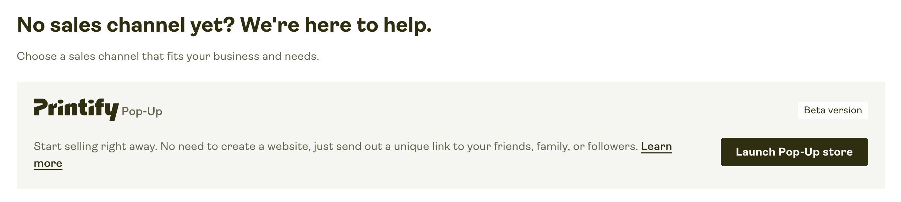
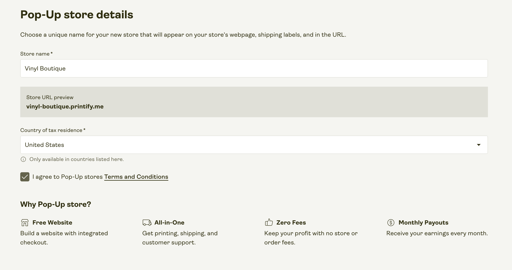
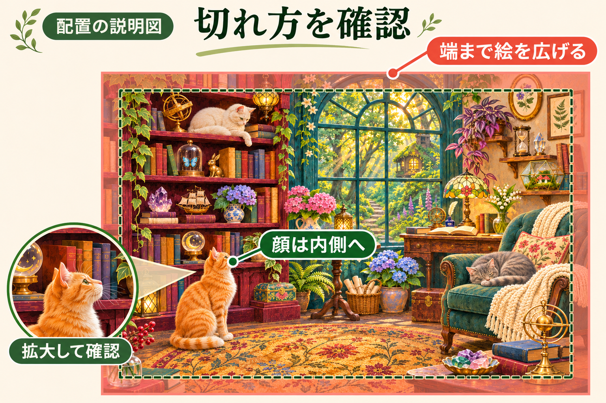

解説動画
AIの絵を、
最初の1商品に。
- 絵のアイデアが、なかなか決まらない。
- 在庫や発送の準備で、手が止まっている。
イラストはAIで。製造・梱包・発送はPrintifyに任せて、まずはパズル1商品のお店を整えましょう。
最初からたくさん作る必要はありません。絵柄を1つ、サイズを1つ。反応を見て、少しずつ改善していきます。
無料で始められる範囲
Printify Pop-Up Storeの開設は無料。在庫の先買いや、注文商品の製造費・送料の立て替えも不要です。標準のprintify.meのURLで始められます。Stripeの本人確認と受取口座の設定は販売前に済ませます。日本は出店対象国に含まれます。
販売通貨は米ドル。利益は必要費用を差し引いて口座へ入金されます。税の義務は販売者側にあるため、実際に適用される費用と税を確認して価格を決めます。サンプル注文は任意で、製造費と送料がかかります。
公式：Pop-Up Storeの仕組み風景も、花も、動物も。
猫の本屋さんは、手順を見せるための一例です。作りたいテーマに、買う人と用途を合わせて考えましょう。
見本画像を保存する見本画像と、印刷用データの違い
この見本は1448×1086pxです。選んだ商品の推奨画素数を満たした入稿済みデータではありません。アップロード時はProduct CreatorのUpload欄にある必要サイズ・解像度と照合してください。足りなければ十分なサイズで作り直すか、利用できる高画質化を行い、実寸で細部を再確認します。
横長14:11の商品へ配置すると、この4:3の絵は周囲が少し切れる場合があります。顔と小物の位置を確認します。画像ファイルの数字だけを増やしても、描写が鮮明になるとは限りません。
作りたいテーマを、商品にする。
好きな絵柄から始めて大丈夫。「誰が、どんなときに買うか」を添えると、構図や紹介の言葉を考えやすくなります。
入力すると、下の画像用指示文・商品説明・SNS文に反映されます。文章の下書きを組み立てる機能です。絵はChatGPTで生成します。
似た商品をいくつか見て、絵柄・ピース数・送料込みの価格を比較。レビューは喜ばれる点と不満の両方を拾います。
比較した商品をメモする
初回だけの準備：登録から販売できる状態まで
まだ登録していない方は、ここから。準備済みなら、この欄は飛ばして商品選びへ進めます。
A｜Printifyに登録する
- Printify公式サイトを開き、Sign up（登録）へ進みます。
- 画面に表示された方法で登録します。メールアドレスとパスワード、またはGoogle・Appleなど、使う方法を選びます。
- メール確認や初期設定の質問が出た場合は、実際の状況に合わせて進めます。管理画面が開けたら、次のお店づくりへ。
Google・Appleで登録した場合、次回も同じボタンでログインします。メールとパスワードでのログインとは入口が違います。
B｜自分のお店を開く
- My Stores（お店の管理）からAdd new store（お店を追加）を開き、Pop-Up Storeを選びます。
- 店名などの必要事項を入力します。下の「入力欄の意味」を見ながら、自分の情報を入れてください。
- お店のデザインテーマを選び、Launch Pop-Up storeで開設します。ここでのテーマはお店の配色・見た目です。AIで作る絵のテーマとは別です。
- Store name
- 店名。ほかのお店と重複しない名前を決めます。
- Store URL preview
- お店のURLの確認欄。店名がURLに使われます。あとから店名を変えると以前のURLは使えなくなるので、共有前に決めましょう。
- Country of tax residence
- 自分の税務上の居住国。お客さんに売りたい国を選ぶ欄ではありません。
- Terms and Conditions
- 利用規約。内容を確認し、同意する場合にチェックします。
公式の画面見本を見る


C｜Stripeで本人確認・受取口座を設定
Stripeは、決済と利益の受け取りに使うサービスです。お店ができても、販売開始前にこの確認を済ませる必要があります。
- Printifyで作ったPop-Up Storeを選び、Store settings（お店の設定）→Verification（確認）を開きます。
- Add information（情報を追加）から案内に進みます。電話番号とメールアドレスを入力し、届いたコードで電話番号を確認します。
- Business type（事業形態）は自分の実際の形態を選択。個人・法人など、国や状況に応じた選択肢で進めます。
- 氏名・生年月日・住所などの本人情報と、利益を受け取る銀行口座をStripeの画面に直接入力します。必要な税務情報や書類は、選んだ国・事業形態の案内に従います。
- 内容を確認して送信。PrintifyのVerificationに戻り、確認状況と追加情報の依頼がないかを見ます。確認完了後、販売開始へ進みます。
Stripeに登録する事業用の住所は、お客さんの請求書に表示されます。どの住所を登録するか、先に確認してください。
身分証などの追加提出を求められる場合があります。確認に数日かかることもあるため、送信しただけで完了とは判断せず、Verificationの表示を確認しましょう。
認証画面が開かない・途中で止まったら
- 認証画面が開かないときは、Printifyでポップアップがブロックされていないか確認します。
- 入力エラーは該当欄のメッセージを読み、本人確認書類などの情報と照合します。事業形態の選択を誤った場合は、Printifyサポートへ確認します。
- 既存のStripeアカウントを別で接続する方法ではなく、このPrintifyの認証手順から進めます。
管理画面で自分のPop-Up Storeを選べること。本人確認と受取口座の設定状況も確認できたら、次の商品選びへ進みます。
パズルを1つ選び、仕様をメモ。
自分の絵柄に合う商品をCatalogで探します。選んだ商品の条件も、指示文と商品説明へ引き継がれます。
商品の選び方と、詳しい仕様メモ
Catalogで「Puzzle」を検索。作例候補「Jigsaw Puzzle with Tin」の252ピースは14×11インチ、缶ケース入りです。同じ商品を選ぶ必要はありません。届けたい国へ配送できることと、画像条件を確かめて決めましょう。
公式カタログで作例の商品を見る「From」の最安値はサイズごとの製造費とは限りません。選んだサイズの費用と配送条件を見ます。必要pxはStart designing→Product CreatorのUpload欄で確認します。
絵を作って、パズルに載せる。
花なら花の種類や葉、風景なら建物や道など、場所ごとに違いを。下の作例では、本棚・窓・ラグを手がかりにしています。
同じ色だけの広い背景を減らしましょう。出来上がったら、人物や動物の形、文字の混入などを拡大して見ます。
絵柄を作る指示文を開く
1で入力したテーマと商品条件が入った指示文を、画像生成が使えるChatGPTへ。必要pxや縦横比が未確認なら、先にUpload欄で調べます。
テーマと仕様を入力すると、自分用の文章がここに表示されます。
生成後は元ファイルを「puzzle-art.png」で保存し、保存先から開き直します。画像のプロパティ等で実際のpxを確認。使ったAIの商用利用条件と、他人のキャラクター・ロゴが混ざっていないことも確認します。
直す箇所が見つかったら
作った画像を同じ会話に添付し、直したい場所だけ具体的に伝えます。
テーマと仕様を入力すると、自分用の文章がここに表示されます。
保存して、アップロードする。

自分の保存画像をProduct Creatorへ。印刷範囲を満たし、主役の切れ・画質・パッケージ面をプレビューで確認して保存します。
入稿前の確認リスト
色やピースの質感まで確かめたい場合はサンプル注文もできます。製造費と送料がかかる任意の確認です。
公式：商品の必要画像サイズ価格と説明を整えて、公開。
米ドルの販売価格を決めます。送料込みの支払総額と、実際に差し引かれる費用・税を確認。商品説明は魅力と正確な仕様をセットにします。
価格の確認用メモ・計算
自分の販売条件で確認した金額をUSDで入力します。空欄を埋めると差引額を計算できます。税額や手数料率を自動で調べる機能ではありません。
支払総額 − 製造費 − 送料 − 税 − その他。自分で別途納付する税や、未入力の費用は含みません。販売価格を決めるための確認用です。
公式：Pop-Up Storeの税の扱い自分の商品説明を確認・コピーする
入力したテーマと商品仕様を反映した下書きです。未確認の項目を埋め、絵と内容が合うか確かめてからPrintifyへ貼り付けます。
テーマと仕様を入力すると、自分用の文章がここに表示されます。
テーマと仕様を入力すると、自分用の文章がここに表示されます。
英語で販売する場合は、日本語の説明を確定後、英訳用の指示文をChatGPTへ。返ってきた数字と仕様を元のメモと再照合します。
公開ページの最終確認
商品内容を保存してPop-Up Storeへ公開。公開URLをスマホで開き、購入者として次の項目を見ます。
確認のための実注文は必須ではありません。購入を確定せず、表示を確認するところまで進めます。
出品できたら、メモを保存。
商品ページと購入手続きを確認できたら、3ステップは完了です。商品メモをTXTで保存し、保存先から開いて確認しましょう。
教材一式をZIPで保存ZIPは展開してindex.htmlを開きます。LP・画像・作業メモ用紙が入っています。
もっと売れるための伝え方。
出品できたら、次は商品を知ってもらう工夫を。同じ商品でも、紹介する切り口を変えて反応を見てみましょう。
3つの切り口を、投稿にするコツ
贈り物：誰への、どんな贈り物に向いているかを紹介します。誕生日など日付が決まった用途なら、注文前に納期を確認できる案内も添えます。
見どころ：絵の一部を拡大して紹介します。花の模様や街の小さな建物など、自分の絵で見つけてほしい部分を選びましょう。
購入案内：完成サイズやピース数、購入リンクの場所を伝えます。送料と納期を商品ページで確認できるようにつなぎます。
SNS紹介文のたたき台
テーマと仕様を入力すると、自分用の文章がここに表示されます。
商品ページに来てもらえないなら、投稿画像やリンクの位置を確認。見られているのに購入につながらないなら、送料込みの価格・納期・説明を見直します。
絵を商品にしたら、
次は届け方を考えましょう。
贈り物として伝えるか、小さな見どころを紹介するか。まず1商品で反応を見ながら、自分に合うAIの使い方を増やしていきましょう。
ほかのAI副業の進め方も知りたい方へ。公式LINEで「AI副業の完全ガイド 5大特典」を無料で受け取れます。
公式LINEで5大特典を受け取る